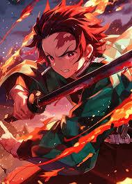
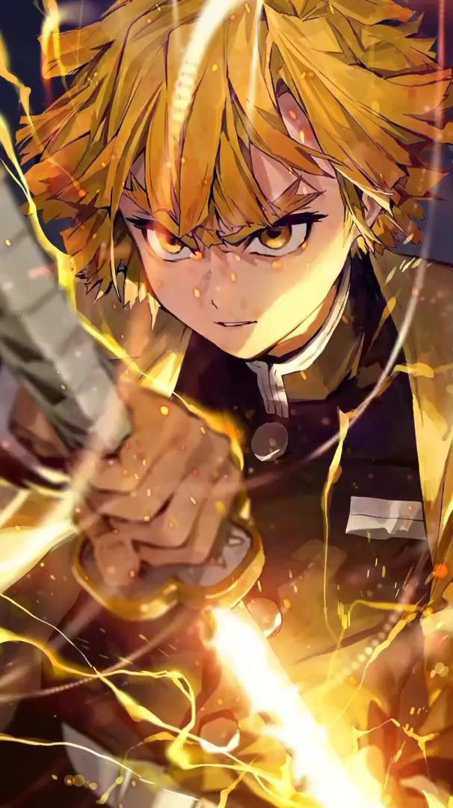
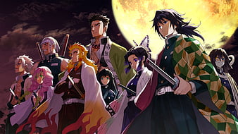

HOME

ABOUT
The Infinity Castle arc in Demon Slayer revolves around the Demon Slayer Corps infiltrating Muzan Kibutsuji's dimensional fortress, the Infinity Castle, for a final confrontation. The arc features intense battles against the Upper Rank demons, including Doma (Upper Rank Two), Akaza (Upper Rank Three), and others. The arc also explores character development, with Shinobu facing Doma to avenge her sister, and Tanjiro awakening to the "Transparent World" to enhance his fighting abilitie
STORY
Tanjiro Kamado is a kind-hearted and intelligent boy who lives with his family in the mountains. After his father's death, he became his family's breadwinner and travels to the nearby village to sell charcoal. One day, Tanjiro comes home to discover his family was slaughtered by a demon. His sister Nezuko is the sole survivor of the incident; though she has been transformed into a demon, Nezuko still shows signs of human emotion and thought. Following an encounter with Giyu Tomioka, the Water Hashira of the Demon Slayer Corps, Tanjiro is sent to train with Giyu's former instructor Sakonji Urokodaki in becoming a Demon Slayer and begins his quest to help Nezuko turn into a human again. Two years later, Tanjiro learns the "Water Breathing" style and takes part in a formidable exam. He is one of the few to pass, officially making him a member of the Corps. Sakonji has hypnotized Nezuko to not harm humans and she aids Tanjiro in dire situations as he starts his work of hunting down and slaying demons. One of their assignments bring them to Asakusa where they encounter Muzan Kibutsuji, the progenitor of all demons and the one responsible for the murder of their family. Tanjiro and Nezuko also meet Tamayo and Yushiro, two demons free from Muzan's control. They ally to develop a cure for Nezuko, though it will require Tanjiro to supply Tamayo with blood samples from the Twelve Kizuki, the twelve most powerful demons under Muzan's command, split into the six Lower Ranks and the six Upper Ranks. Along their journey, Tanjiro and Nezuko meet fellow Demon Slayers Zenitsu Agatsuma and Inosuke Hashibira; they team up after Tanjiro's mission to kill Kyogai, the former Lower Six. They later join other Demon Slayers in facing the family of Lower Five Rui. In the midst of battle, Tanjiro unlocks a mysterious Breathing Style known as "Hinokami Kagura", but Rui ultimately outmatches him, while Inosuke and Zenitsu are injured and the expedition is slaughtered. Giyu and Insect Hashira Shinobu Kocho rescue the survivors, who are brought back to the Corps' headquarters. Tanjiro is put on trial by the Hashira – Giyu, Shinobu, Flame Hashira Kyojuro Rengoku, Sound Hashira Tengen Uzui, Love Hashira Mitsuri Kanroji, Stone Hashira Gyomei Himejima, Mist Hashira Muichiro Tokito, Serpent Hashira Obanai Iguro, and Wind Hashira Sanemi Shinazugawa – who, with the exception of Giyu and Mitsuri, do not believe he and Nezuko should be allowed to live Nonetheless, the Corps' leader Kagaya Ubuyashiki, is able to convince them to accept Nezuko and see Tanjiro's importance, believing it is with their help that Muzan can be defeated.
Angered by Rui's death, Muzan kills the Lower Ranks due to their constant failures; he spares Lower One Enmu and tasks him with killing Tanjiro. After a battle against Enmu in a passenger train, Tanjiro kills him with Kyojuro's support. However, Upper Three Akaza appears and battles Kyojuro, who dies from his wounds as the demon escapes. Months later, the group is sent to Yoshiwara with Tengen, where they face off and kill the Upper Six siblings Gyutaro and Daki. Tengen retires from the Corps after suffering extensive injuries. During another battle at the Swordsmith Village, where the Corps' weapons are forged, Tanjiro meets Sanemi's younger brother Genya, who has the mysterious ability to temporarily gain demonic powers after eating their flesh. With the help of Muichiro and Mitsuri, the group kill Upper Five Gyokko and Upper Four Hantengu. In the aftermath, they discover that Nezuko is immune to sunlight. She becomes Muzan's prime target as he has long sought a way to overcome the sun and become immortal. Tanjiro also learns his Hinokami Kagura descends from "Sun Breathing", the first Breathing Style created by Yoriichi Tsugikuni, the most powerful Demon Slayer in history, and develops it to fight Muzan. Knowing Muzan will attempt to find Nezuko, the Corps enacts strict training to prepare its members for the coming conflict. Tamayo develops a serum with the obtained blood samples to cure Nezuko, who is kept in isolation as she recovers. Muzan appears and Kagaya triggers a suicide attack to stagger him. The Hashira ambush Muzan but he traps them all within the Infinity Castle, an alternate dimension housing Akaza, Upper Two Doma, Upper One Kokushibo, and the newly-ascended members Kaigaku and Nakime: Zenitsu's former partner and the Infinity Castle's owner respectively. As Zenitsu kills Kaigaku, Tamayo injects Muzan with a poison she and Shinobu have made to weaken his abilities. When Akaza remembers his human life, he betrays Muzan and commits suicide, while Shinobu sacrifices herself to poison Doma, allowing her protégé Kanao Tsuyuri and Inosuke to kill him. After a harrowing battle, Kokushibo kills both Muichiro and Genya before being killed as well. Muzan kills Tamayo, and later Nakime when she is hypnotized by Yushiro into using her powers against him, but he is forced above ground by the Corps. Aided by Tamayo's poison, the Corps unleash a desperate battle of attrition as the remaining members fight to stall Muzan until the morning sun can kill him. Muzan is left helpless against the sun but Gyomei, Obanai, and Mitsuri succumb to their injuries. As Tanjiro delivers the final blow, Muzan fatally wounds him and forcefully gives him his remaining blood. Tanjiro is transformed into a demon as Muzan's last-ditch effort to have his species survive. He begins to attack the survivors but through their efforts and Nezuko's aid, who has been fully restored to her human self, the transformation is reversed. In the aftermath of the battle, the Corps are disbanded, leaving Giyu and Sanemi as the last surviving Hashira. Muzan's death has effectively vanquished all demons under his control while Yushiro goes to live as a painter. Tanjiro and Nezuko return to their home, accompanied by Zenitsu and Inosuke. Tanjiro and Inosuke marry Kanao and fellow Demon Slayer Aoi Kanzaki, respectively, while Zenitsu marries Nezuko. In a modern-day epilogue, the descendants and reincarnations of the Corps members enjoy a peaceful life free of demons.
PORTFOLIO



CONTACT
EMAIL:Anjansai118@gmail.com
PH no:1234567890
ANIMEE WORLDDD